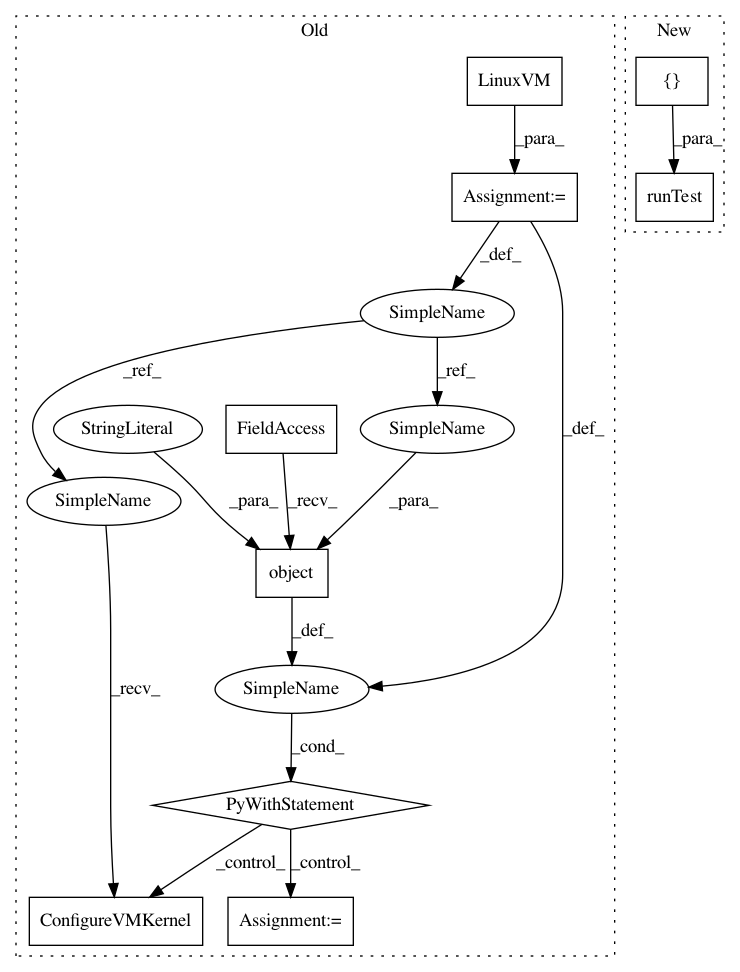

03bf338ef069b2dbd7efcd09d02386b3191615c7,tests/linux_virtual_machine_test.py,TestConfigureVMKernel,testMultipleFiles,#TestConfigureVMKernel#,65
Before Change
"/proc/sys/vm/dirty_background_ratio")])
def testMultipleFiles(self):
vm = LinuxVM()
self.mocked_flags.procfs_config = {"sys": {"vm":
{"dirty_background_ratio": 10,
"dirty_ratio": 50}}}
self.mocked_flags.sysfs_config = {}
with mock.patch.object(vm, "RemoteCommand") as remote_command:
vm.ConfigureVMKernel()
self.assertEqual(remote_command.call_args_list,
[mock.call("echo "10" | sudo tee "
"/proc/sys/vm/dirty_background_ratio"),
mock.call("echo "50" | sudo tee "
After Change
[])
def testMultipleFiles(self):
self.runTest({"sys": {"vm": {"dirty_background_ratio": 10,
"dirty_ratio": 50}}},
{},
[mock.call("echo "10" | sudo tee "
"/proc/sys/vm/dirty_background_ratio"),
mock.call("echo "50" | sudo tee "
"/proc/sys/vm/dirty_ratio")],
[])
def testSysfs(self):
self.runTest({},
{"kernel": {"mm": {"transparent_hugepage":
In pattern: SUPERPATTERN
Frequency: 4
Non-data size: 9
Instances
Project Name: GoogleCloudPlatform/PerfKitBenchmarker
Commit Name: 03bf338ef069b2dbd7efcd09d02386b3191615c7
Time: 2016-09-12
Author: nlavine@google.com
File Name: tests/linux_virtual_machine_test.py
Class Name: TestConfigureVMKernel
Method Name: testMultipleFiles
Project Name: GoogleCloudPlatform/PerfKitBenchmarker
Commit Name: 03bf338ef069b2dbd7efcd09d02386b3191615c7
Time: 2016-09-12
Author: nlavine@google.com
File Name: tests/linux_virtual_machine_test.py
Class Name: TestConfigureVMKernel
Method Name: testSysfs
Project Name: GoogleCloudPlatform/PerfKitBenchmarker
Commit Name: 03bf338ef069b2dbd7efcd09d02386b3191615c7
Time: 2016-09-12
Author: nlavine@google.com
File Name: tests/linux_virtual_machine_test.py
Class Name: TestConfigureVMKernel
Method Name: testConfigureVMKernel
Project Name: GoogleCloudPlatform/PerfKitBenchmarker
Commit Name: 03bf338ef069b2dbd7efcd09d02386b3191615c7
Time: 2016-09-12
Author: nlavine@google.com
File Name: tests/linux_virtual_machine_test.py
Class Name: TestConfigureVMKernel
Method Name: testConvertToString